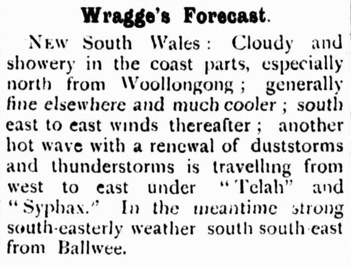

images = download_images("107024751")articles
download digitised newspaper articles from Trove as images
Functions
main
main ()
CLI configuration
download_images
download_images (article_id, output_dir='', size=None)
Extract an image of a newspaper article from the page image(s), download and save it, and return the image filename(s).
Parameters:
- article_id – identifier for a Trove newspaper article
- output_dir – a directory to save images in (will be created if it doesn’t exist)
- size – maximum dimensions of image
Returns:
- a list of image file names
get_article_boxes
get_article_boxes (article_id)
Get a list of boundary boxes for an article, each box representing the position of an article on a page.
Positional information about the article is attached to each line of the OCR output in data attributes.
This function loads the HTML version of the article and scrapes the x, y, and width values for each line of text to determine the coordinates of a box around the article.
get_box
get_box (zones)
Loop through all the zones to find the outer limits of each boundary. Return a bounding box around the article.
Basic usage
Just give the download_images function a Trove article identifier. It downloads and saves the images, and returns a list of image file names. If an article is split across multiple pages, you’ll get multiple images!
The image files names have the form
nla.news-article[article id]-[page id].jpg.
For example:
nla.news-article107024751-11565831.jpg.
This means you can always track back from the image to find out where it came from.
The download_images function returns a list of the image file names. We can use this to preview the downloaded articles, or to run some additional processing steps.
displayImage(images[0], width=300)
By default, images are saved in the current directory. To change this, you can include the output_dir parameter to specify the directory where you want the images saved. If the directory doesn’t exist, it will be created.
images = download_images("107024751", output_dir="images")Tests
The get_article_boxes function resturns a list of bounding boxes defining the position of an article on a page.
boxes = get_article_boxes("107024751")
boxes[{'page_id': '11565831',
'left': 1062,
'top': 1406,
'right': 1775,
'bottom': 1949}]This article is printed on one page only, so get_article_boxes should return a list containing a single box.
assert len(boxes) == 1Each box includes a page_id value, providing the identifier of the page on which the article is printed.
assert "page_id" in boxes[0]The bounding box has left, right, top, and bottom values. We’d expect left to be less that right.
assert boxes[0]["left"] < boxes[0]["right"]Let’s try an article that is split across multiple pages.
boxes = get_article_boxes("162833980")There should be two boxes.
assert len(boxes) == 2The download_images function downloads the images and returns a list of image names.
images = download_images("107024751")
images['nla.news-article107024751-11565831.jpg']There should be a single image file name in the images list.
assert len(images) == 1The image file names should include the article id.
assert "107024751" in images[0]Let’s check that the image has been downloaded and saved.
assert Path(images[0]).exists()
# Delete the image
Path(images[0]).unlink()Let’s use the output_dir parameter to save the image to a specified directory.
images = download_images("107024751", output_dir="images-test")Let’s make sure the image has been saved to the directory.
assert Path("images-test", images[0]).exists()Let’s download an article split across multiple pages.
images = download_images("162833980")assert len(images) > 1And check that all the images have been downloaded.
for img in images:
assert Path(img).exists()
# Delete downloaded images
for img in images:
Path(img).unlink()# Clean up after tests
shutil.rmtree(Path("images"))
shutil.rmtree(Path("images-test"))